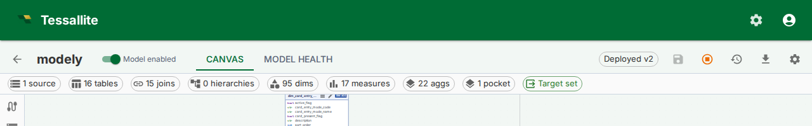
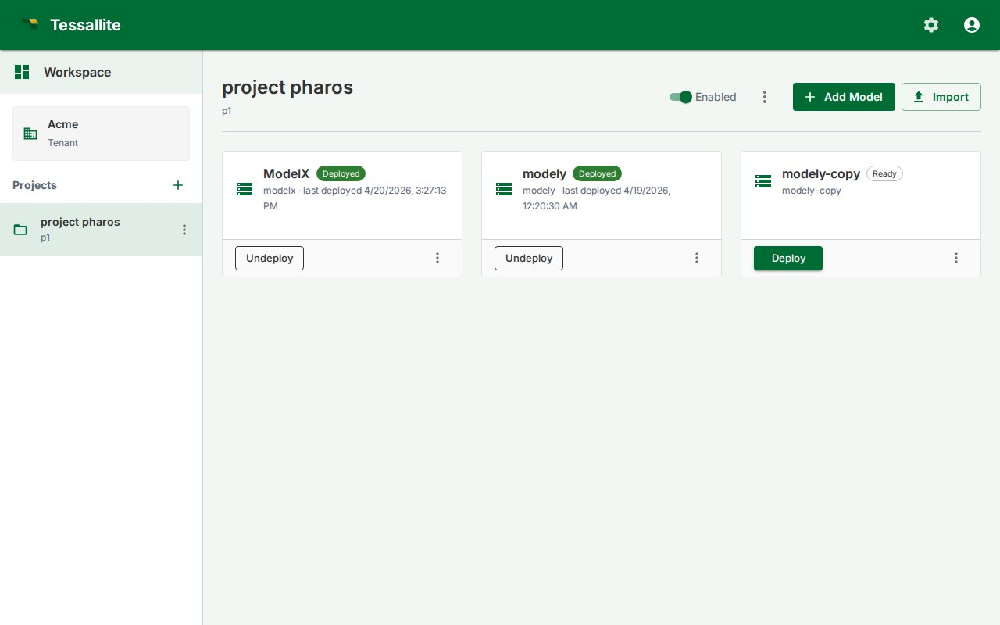

Deploy a Model

What this covers
A model in Tessallite is in one of two states: Deployed or Ready. Only deployed models are visible to BI tools (Excel, Power BI), accept queries through the query router, and have their aggregates refreshed by the scheduler. Ready models are draft state — you can edit them freely, but nothing downstream sees them. This article covers deploying, undeploying, and the difference between the two states.
Before you start
- You must have at least one saved version. Click Save first if the status chip reads Edited or Empty. See Save and Version a Model.
- The Deploy and Undeploy buttons appear on the Model Builder top toolbar and on each model card in the project Explorer, so you can deploy or undeploy without opening the Builder.
Deploying a model
- Open the Model Builder.
- Make sure the status chip reads Saved v{N} (not Edited — Tessallite refuses to deploy edited state, because there is no version to deploy).
- Click the Deploy button (rocket icon). Tessallite sets the model's deploy pointer to the latest saved version and stamps
last_deployed_at. - The status chip changes to Deployed v{N}.
- Within seconds the query router, scheduler, and XMLA gateway start serving the model.
If the model has never been saved, clicking Deploy first prompts you to confirm Save-and-Deploy in one click.
Undeploying a model
- Open the Model Builder for a deployed model.
- Click the Undeploy button (stop icon).
- Type
undeployin the confirmation box and click Undeploy. - The deploy pointer is cleared. BI tools stop seeing the model immediately. The scheduler stops refreshing its aggregates.
The model's saved versions stay intact. You can re-deploy any of them later via the Versions dialog.
Deploying or undeploying from the Explorer

Each model card in the project Explorer shows a single toggling button:
- Deploy when the model is currently undeployed (filled button). Clicking it deploys the latest saved version. If the model has no saved versions yet, the click surfaces the same error you would see in the Model Builder and the card stays unchanged.
- Undeploy when the model is currently deployed (outlined button). Clicking it asks for the typed-name confirmation (
undeploy) and then clears the deploy pointer.
This is useful for oncall scenarios where you just need to flip one model without jumping into the Builder for each one.
Deployed vs Ready
| Behaviour | Deployed | Ready |
|---|---|---|
| Visible to Excel / Power BI / other BI tools | Yes | No (XMLA gateway hides it) |
| Accepts queries from the query router | Yes | No (returns 409) |
| Aggregates refreshed by the scheduler | Yes | No |
| Schema-drift sweep runs against it | Yes | No |
| Editable in Model Builder | Yes (edits are unsaved) | Yes |
What deploying freezes
When you deploy, Tessallite takes a snapshot of the model's shape — its measures (names, formulas, aggregation, type), dimensions, hierarchy levels, and which columns are hidden — and serves that snapshot to BI tools. This is called pinning.
Pinning is what makes your draft edits safe. After a model is deployed you can keep working in the Builder: rename a measure, change a formula from SUM(amount) to SUM(amount) - SUM(discount), un-hide a column, add a hierarchy level. None of those edits reach Excel, Power BI, or the query router until you Save and Deploy again. BI tools keep seeing the deployed version exactly as it was, so a report never changes underneath the person reading it just because someone happened to be editing the model.
Three things are deliberately not frozen, because they are safety controls that must take effect immediately:
- Row security and personas — if you tighten who can see which rows, the new restriction applies on the very next query. A security rule never waits for a redeploy.
- Column-level security (data tags) — restricting a tagged column takes effect at once, for the same reason. You should never have to redeploy to remove access.
- Aggregates and pocket tables — these are speed-up tables the scheduler and optimiser maintain underneath the pinned shape. Routing a query to one of them never changes which numbers come back; it only changes how fast.
Two other actions apply immediately without a Deploy, because the product treats them as governance actions (like un-deploying) rather than definition edits:
- Deleting a KPI — removes it from BI tools at once. There is no "undo by not deploying."
- Deleting a named set — removes it from Excel and Power BI immediately. Any report referencing it renders empty on the next refresh.
These differ from field edits (renaming a KPI, changing its formula), which DO wait for a Deploy. Deleting the whole object is irreversible outside the deployment cycle.
Worked example. You deploy v3 of a Sales model on Monday. On Tuesday you start reworking the Revenue measure but do not Deploy. An analyst querying from Excel all week still sees the v3 Revenue. On Friday your rework is ready; you Save and Deploy, and only then does the new Revenue reach BI tools. But if on Wednesday you had tightened a row-security rule, that restriction would have applied immediately — security is never left waiting.
Choosing which version to deploy
The default Deploy action deploys the latest saved version. To deploy an older version:
- Open the Versions dialog (clock icon).
- Find the version you want.
- Click Deploy on that row.
The deploy pointer jumps; older saved versions are not deleted.
Tips
- Deploy is non-destructive: it sets a pointer, it does not modify saved versions.
- Use Undeploy for time-bounded freezes (compliance reviews, model rebuilds in flight).
- After a Save click, the toolbar chip shows whether the deployed version is in sync with the saved one. Deployed v3 · edited means: deploy points at v3, but the live state is now ahead of v3 — Save and Deploy again to ship.